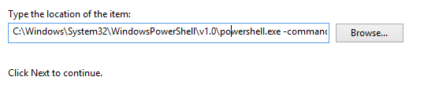

Introduction
When we are developing with multiple tenants in Office 365 using the same development environment, I am pretty sure we are annoyed when we have to deal with with the Office 365 authentication.
That is not Office 365 issue, is just having different accounts having to access to the same authentication portal in the same PC. This could also happens if we have different Yammer accounts with different group per each one.
The typical error when we access SharePoint site (Office 365) is:
We’re sorry, but … can’t be found in the …sharepoint.com directory. Please try again later, while we try to automatically fix this for you.
{kind=link}
Due miscellaneous reasons the “click here to sign in with different account to this site” might not work and then you end up in nice loop of trying to get rid of the login information.
Solution
You can use incognito session to open the browser with different credentials, but still this is time consuming because every time you need to put the credentials.
My recommendation here is to use Chrome profiles in combination with a desktop shortcut.
This is a quick productivity tip, it only takes you 15 minutes to apply, but it will save a lot of time afterwards.
Chrome browser has a nice feature allows to create different Profiles. And every profile has their own Cache, Session data, History, etc. For every profile Chrome creates a new folder in the path: “C:\Users\youruser\AppData\Local\Google\Chrome\User Data”. Here an example of OfficeNetwork profile I created:
{kind=link}
The good point here is that you can configure a shortcut to open chrome with a specified profile and url.
Click thought
Do following steps to create it:
Right click on Desktop and New – Shotcut
In the location of the item we will call to PowerShell with a execution command:
1
C:\Windows\System32\WindowsPowerShell\v1.0\powershell.exe -command "& 'Start-Process' 'chrome.exe' 'https://www.yammer.com/itpronetwork --profile-directory=OfficeNetwork'"
Notes
- profile-directory parameter can’t contains spaces.
- First time this script is executed the profile OfficeNetwork is created (probably with other Display Name like “Person X”). We can change later the display name using Chrome Settings. But is important to create the Profile with the script just to avoid white spaces.
- In my case I am configuring the Profile called “OfficeNetwork” to open the Office 365 Network url with Chrome using PowerShell as a bridge. 
Click on Next and put a name of the shortcut
Click Finish
Optionally, you can change the icon in the shortcut properties. In this example I selected Chrome.exe icon to relate this with a webpage.
Double click on shortcut and Enjoy!!
{kind=link}
{kind=link}
{kind=link}
{kind=link}
{kind=link}
Do this for every site you need to have different cookies, session, etc in the browser. And you will save a lot of time looking for credentials, urls, etc…